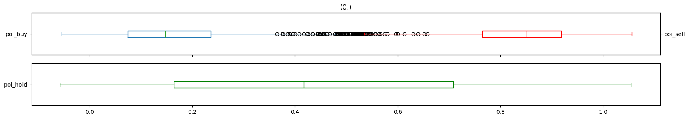
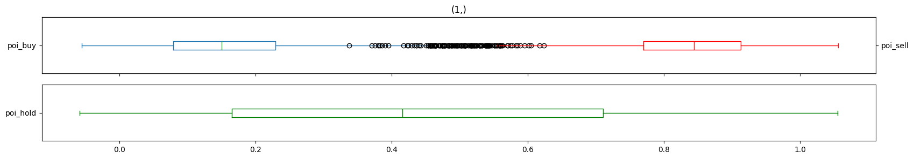
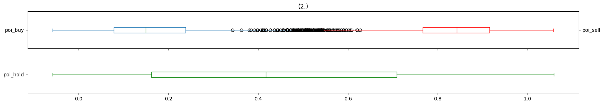
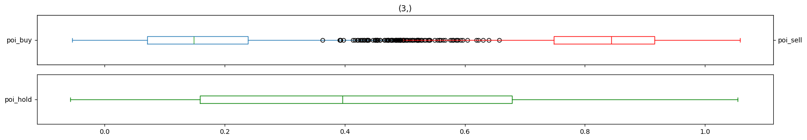

Experiment: Bollinger Bands Scaling Strategy (BBSS)#
import pandas as pd
from glob import glob
import matplotlib.pyplot as plt
import talib
from tqdm import tqdm
def load(file_):
try:
_df = pd.read_csv(file_, parse_dates=True)
_df.datetime = pd.to_datetime(_df.datetime)
_df['date'] = _df.datetime.dt.date
_df.set_index('datetime', inplace=True)
return _df
except Exception as e:
return pd.DataFrame()
def mark_events(data, ref_frame=5):
data = data.copy()
data['sell'] = (
data['close'] == data['close'].shift(-ref_frame).rolling(2 * ref_frame).max()).astype(int).replace(0, None)
data['buy'] = (
data['close'] == data['close'].shift(-ref_frame).rolling(2 * ref_frame).min()).astype(int).replace(0, None)
data['hold'] = data.apply(lambda row: int(
not (row['sell'] or row['buy'])), axis=1)
return data
file_df = pd.DataFrame([
{
'stock_code': file_.split('/')[-2],
'path': file_,
} for file_ in glob('/workspace/nifty/NIFTY/2023*.csv')
if 'options_history' not in file_ and 'OPTIONS' not in file_ and 'CALL' not in file_ and 'PUT' not in file_
])
df_map = {}
for stock, group in tqdm(file_df.groupby('stock_code')):
df_map[stock] = pd.concat(
list(
map(
load,
sorted(group.path.tolist())
)
)
).sort_index()
100%|██████████| 1/1 [00:00<00:00, 1.35it/s]
from backtesting import Strategy
from typing import Tuple
from backtester import simulate
Signal = Tuple[bool, bool, bool]
def mark_action(data, positions, trades, closed_trades):
buy, close_pos, sell = False, False, False
if data.strategy_buy and (not positions.size or positions.is_short):
buy = True
close_pos = True
elif data.strategy_sell and (not positions.size or positions.is_long):
sell = True
close_pos = True
return buy, close_pos, sell
class BBStrategy(Strategy):
signal = None
SL = 5
TP = 10
def _is_trading_window(self):
if (
self.data.index[-1].hour == 15 and
self.data.index[-1].minute > 15
) or (
self.data.index[-1].hour == 9 and
self.data.index[-1].minute < 30
):
return False
return True
def __init__(self, broker, data, params):
super().__init__(broker, data, params)
self.signal = params['signal']
def init(self):
self._open = self.data.Open
self._high = self.data.High
self._low = self.data.Low
self._close = self.data.Close
def next(self):
if not self._is_trading_window():
self.position.close()
return
buy, close, sell = self.signal(
self.data,
self.position,
self.trades,
self.closed_trades
)
if close:
self.position.close()
if buy:
self.buy(
size=1,
# sl=self.data.Low - self.SL,
)
if sell:
self.sell(
size=1,
# sl=self.data.High + self.SL
)
import numpy as np
BUY_QUANTILE = .5
SELL_QUANTILE = .20
DEVIATION = 2
TIMEPERIOD = 20
REF_FRAME = 12
def scale_by_bb(
series: pd.Series,
deviation: int = 2,
timeperiod: int = 20
):
upper, _, lower = talib.BBANDS(
series,
timeperiod=timeperiod,
nbdevup=deviation,
nbdevdn=deviation
)
return (series - lower) / (upper - lower)
def evaluate_metrics(
stock_code,
df,
deviation=DEVIATION,
timeperiod=TIMEPERIOD,
ref_frame=REF_FRAME
):
dfs = []
initial_cash = df.high.max() * 5
for _, group in tqdm(df.groupby('date'), desc=stock_code):
group['scaled_close'] = scale_by_bb(group.close, deviation, timeperiod)
dfs.append(
mark_events(
group,
ref_frame=ref_frame
)
)
df = pd.concat(dfs)
poi_buy = (df.scaled_close * df.buy).dropna()
poi_sell = (df.scaled_close * df.sell).dropna()
buy_threshold = poi_buy.quantile(BUY_QUANTILE)
sell_threshold = poi_sell.quantile(SELL_QUANTILE)
# Exit Strategy
df['strategy_buy'] = (df.scaled_close >= buy_threshold) & (
df.scaled_close.shift(1) < buy_threshold)
df['strategy_sell'] = (df.scaled_close <= sell_threshold) & (
df.scaled_close.shift(1) > sell_threshold)
# Entry Strategy
# df['strategy_buy'] = (df.scaled_close <= buy_threshold) & (
# df.scaled_close.shift(1) > buy_threshold)
# df['strategy_sell'] = (df.scaled_close >= sell_threshold) & (
# df.scaled_close.shift(1) < sell_threshold)
df['strategy_buy'] = df['strategy_buy'].astype(int).replace(0, None)
df['strategy_sell'] = df['strategy_sell'].astype(int).replace(0, None)
stats = simulate(
df.rename(
{
'open': 'Open',
'high': 'High',
'low': 'Low',
'close': 'Close',
},
axis=1
),
cash=initial_cash,
strategy=mark_action,
backtest_class=BBStrategy,
)
# stats._trades.to_csv(f'./simulations/{stock_code}_trades.csv', index=False)
return {
'stock_code': stock_code,
'initial_cash': initial_cash,
'buy_threshold': buy_threshold,
'sell_threshold': sell_threshold,
'Return [%]': stats['Return [%]'],
'Equity Final [$]': stats['Equity Final [$]'],
'Avg. Drawdown [%]': stats['Avg. Drawdown [%]'],
'# Trades': stats['# Trades'],
'Win Rate [%]': stats['Win Rate [%]'],
'Avg. Trade Duration': stats['Avg. Trade Duration'],
'Expectancy [%]': stats['Expectancy [%]'],
}
ndf = df_map['NIFTY'].copy()
ndf.drop(columns=['only_date', 'exchange_code',
'stock_code', 'volume'], inplace=True)
ndf['hour'] = ndf.reset_index().datetime.dt.hour.values
ndf['day_of_week'] = ndf.reset_index().datetime.dt.dayofweek.values
dates = ndf.date.unique()[-500:]
dfs = []
initial_cash = ndf.high.max() * 5
for _, group in tqdm(ndf.groupby('date')):
group['scaled_close'] = scale_by_bb(group.close, 2, 6)
start_index = group.index[-1].replace(hour=9, minute=30)
end_index = group.index[-1].replace(hour=15, minute=15)
group = group[start_index:end_index].copy()
dfs.append(
mark_events(
group,
ref_frame=4
)
)
ndf = pd.concat(dfs)
ndf
0%| | 0/242 [00:00<?, ?it/s]
100%|██████████| 242/242 [00:00<00:00, 262.67it/s]
| open | high | low | close | date | hour | day_of_week | scaled_close | sell | buy | hold | |
|---|---|---|---|---|---|---|---|---|---|---|---|
| datetime | |||||||||||
| 2023-01-02 09:30:00 | 18101.90 | 18111.55 | 18094.25 | 18094.35 | 2023-01-02 | 9 | 0 | 0.182213 | None | None | 1.0 |
| 2023-01-02 09:31:00 | 18093.40 | 18103.55 | 18086.50 | 18103.20 | 2023-01-02 | 9 | 0 | 0.448954 | None | None | 1.0 |
| 2023-01-02 09:32:00 | 18103.25 | 18103.25 | 18091.70 | 18096.25 | 2023-01-02 | 9 | 0 | 0.237267 | None | None | 1.0 |
| 2023-01-02 09:33:00 | 18096.20 | 18117.70 | 18089.95 | 18112.45 | 2023-01-02 | 9 | 0 | 0.948226 | None | None | 1.0 |
| 2023-01-02 09:34:00 | 18112.75 | 18128.70 | 18107.10 | 18122.85 | 2023-01-02 | 9 | 0 | 0.950973 | None | None | 1.0 |
| ... | ... | ... | ... | ... | ... | ... | ... | ... | ... | ... | ... |
| 2023-12-29 15:11:00 | 21732.60 | 21736.00 | 21730.25 | 21731.75 | 2023-12-29 | 15 | 4 | 0.166548 | None | None | 1.0 |
| 2023-12-29 15:12:00 | 21731.20 | 21731.85 | 21718.95 | 21718.95 | 2023-12-29 | 15 | 4 | -0.019801 | None | None | 1.0 |
| 2023-12-29 15:13:00 | 21718.80 | 21729.55 | 21716.30 | 21728.95 | 2023-12-29 | 15 | 4 | 0.430657 | None | None | 1.0 |
| 2023-12-29 15:14:00 | 21728.75 | 21730.10 | 21714.00 | 21716.30 | 2023-12-29 | 15 | 4 | 0.117277 | None | None | 1.0 |
| 2023-12-29 15:15:00 | 21716.75 | 21731.05 | 21716.75 | 21729.20 | 2023-12-29 | 15 | 4 | 0.616205 | None | None | 1.0 |
83337 rows × 11 columns
# ndf['poi_buy'] = (ndf.scaled_close * ndf.buy).dropna()
# ndf['poi_sell'] = (ndf.scaled_close * ndf.sell).dropna()
# ndf['poi_hold'] = ndf.scaled_close * (
# ~(
# ndf['poi_buy'].astype(bool).fillna(False) &
# ndf['poi_sell'].fillna(False).astype(bool)
# )
# ).astype(int)
# fig, (ax, hax) = plt.subplots(2, 1, figsize=(20, 3), sharex=True)
# ndf['poi_buy'].plot.box(vert=False, ax=ax, color='g')
# ndf['poi_sell'].plot.box(vert=False, ax=ax.twinx(), color='r')
# ndf['poi_hold'].plot.box(vert=False, ax=hax, color='b')
# buy_threshold = ndf['poi_buy'].quantile(BUY_QUANTILE)
# sell_threshold = ndf['poi_sell'].quantile(SELL_QUANTILE)
# # df['poi_hold'].plot.box(vert=False, ax=ax.twinx().twinx(), color='r')
# ax.axvline(buy_threshold, color='g')
# hax.axvline(buy_threshold, color='g')
# ax.axvline(sell_threshold, color='r')
# hax.axvline(sell_threshold, color='r')
# ndf
# BUY_QUANTILE = .5
# SELL_QUANTILE = .25
# for day, group in ndf.groupby(['hour']):
# fig, (ax, hax) = plt.subplots(2, 1, figsize=(20, 5), sharex=True)
# group['poi_buy'].plot.box(vert=False, ax=ax, color='g')
# group['poi_sell'].plot.box(vert=False, ax=ax.twinx(), color='r')
# group['poi_hold'].plot.box(vert=False, ax=hax, color='b')
# ax.set_title(day)
# buy_threshold = group['poi_buy'].quantile(BUY_QUANTILE)
# sell_threshold = group['poi_sell'].quantile(SELL_QUANTILE)
# # df['poi_hold'].plot.box(vert=False, ax=ax.twinx().twinx(), color='r')
# ax.axvline(buy_threshold, color='g')
# hax.axvline(buy_threshold, color='g')
# ax.axvline(sell_threshold, color='r')
# hax.axvline(sell_threshold, color='r')
# plt.show()
# plt.close()
# # print(day, group[['poi_buy', 'poi_sell', 'poi_hold']
# # ].quantile([.05, .5, .95]))
# # print()
from tqdm import trange
metrics = []
configs = []
for frame in range(4, 15, 2):
for period in range(4, 25, 4):
configs.append((frame, period))
for frame, period in tqdm(configs):
metric = evaluate_metrics(
'NIFTY',
ndf[ndf.date.isin(dates)],
deviation=DEVIATION,
timeperiod=period,
ref_frame=frame
)
metric.update({
'frame': frame,
'period': period
})
metrics.append(
metric
)
metrics_df = pd.DataFrame(metrics)
metrics_df['Win Rate [%]'] = metrics_df['Win Rate [%]'].round()
metrics_df['Return [%]'] = metrics_df['Return [%]'].round()
metrics_df.to_csv('./nifty_metrics.csv', index=False)
metrics_df.sort_values(
['Win Rate [%]', 'Equity Final [$]'], ascending=[False, False])
NIFTY: 100%|██████████| 241/241 [00:00<00:00, 264.12it/s]
NIFTY: 100%|██████████| 241/241 [00:00<00:00, 272.82it/s]
NIFTY: 100%|██████████| 241/241 [00:00<00:00, 299.22it/s]
NIFTY: 100%|██████████| 241/241 [00:00<00:00, 267.75it/s]
NIFTY: 100%|██████████| 241/241 [00:00<00:00, 269.62it/s]
NIFTY: 100%|██████████| 241/241 [00:00<00:00, 297.99it/s]
NIFTY: 100%|██████████| 241/241 [00:00<00:00, 300.29it/s]
NIFTY: 100%|██████████| 241/241 [00:00<00:00, 274.83it/s]
NIFTY: 100%|██████████| 241/241 [00:00<00:00, 272.88it/s]
NIFTY: 100%|██████████| 241/241 [00:00<00:00, 261.97it/s]
NIFTY: 100%|██████████| 241/241 [00:00<00:00, 295.87it/s]
NIFTY: 100%|██████████| 241/241 [00:00<00:00, 295.97it/s]
NIFTY: 100%|██████████| 241/241 [00:00<00:00, 296.11it/s]
NIFTY: 100%|██████████| 241/241 [00:00<00:00, 298.43it/s]
NIFTY: 100%|██████████| 241/241 [00:00<00:00, 298.64it/s]
NIFTY: 100%|██████████| 241/241 [00:00<00:00, 296.90it/s]
NIFTY: 100%|██████████| 241/241 [00:00<00:00, 274.83it/s]
NIFTY: 100%|██████████| 241/241 [00:00<00:00, 298.21it/s]
NIFTY: 100%|██████████| 241/241 [00:00<00:00, 295.99it/s]
NIFTY: 100%|██████████| 241/241 [00:00<00:00, 294.20it/s]
NIFTY: 100%|██████████| 241/241 [00:00<00:00, 290.87it/s]
NIFTY: 100%|██████████| 241/241 [00:00<00:00, 297.21it/s]
NIFTY: 100%|██████████| 241/241 [00:00<00:00, 294.47it/s]
NIFTY: 100%|██████████| 241/241 [00:00<00:00, 298.24it/s]
NIFTY: 100%|██████████| 241/241 [00:00<00:00, 290.05it/s]
NIFTY: 100%|██████████| 241/241 [00:00<00:00, 295.77it/s]
NIFTY: 100%|██████████| 241/241 [00:00<00:00, 271.03it/s]
NIFTY: 100%|██████████| 241/241 [00:00<00:00, 297.16it/s]
NIFTY: 100%|██████████| 241/241 [00:00<00:00, 296.23it/s]
NIFTY: 100%|██████████| 241/241 [00:00<00:00, 295.40it/s]
NIFTY: 100%|██████████| 241/241 [00:00<00:00, 270.55it/s]
NIFTY: 100%|██████████| 241/241 [00:00<00:00, 296.69it/s]
NIFTY: 100%|██████████| 241/241 [00:00<00:00, 297.71it/s]
NIFTY: 100%|██████████| 241/241 [00:00<00:00, 273.07it/s]
NIFTY: 100%|██████████| 241/241 [00:00<00:00, 295.50it/s]
NIFTY: 100%|██████████| 241/241 [00:00<00:00, 294.74it/s]
100%|██████████| 36/36 [02:42<00:00, 4.51s/it]
| stock_code | initial_cash | buy_threshold | sell_threshold | Return [%] | Equity Final [$] | Avg. Drawdown [%] | # Trades | Win Rate [%] | Avg. Trade Duration | Expectancy [%] | frame | period | |
|---|---|---|---|---|---|---|---|---|---|---|---|---|---|
| 31 | NIFTY | 108921.25 | 0.078006 | 0.836772 | 3.0 | 111879.40 | -0.025801 | 5466 | 64.0 | 0 days 01:36:00 | 0.002785 | 14 | 8 |
| 25 | NIFTY | 108921.25 | 0.078885 | 0.836428 | 3.0 | 111742.50 | -0.026606 | 5478 | 64.0 | 0 days 01:35:00 | 0.002645 | 12 | 8 |
| 19 | NIFTY | 108921.25 | 0.079998 | 0.835781 | 2.0 | 111557.70 | -0.027196 | 5488 | 64.0 | 0 days 01:35:00 | 0.002474 | 10 | 8 |
| 13 | NIFTY | 108921.25 | 0.084419 | 0.833004 | 2.0 | 111383.50 | -0.027248 | 5586 | 64.0 | 0 days 01:34:00 | 0.002292 | 8 | 8 |
| 20 | NIFTY | 108921.25 | 0.061696 | 0.840356 | 0.0 | 109129.50 | -0.045507 | 3900 | 64.0 | 0 days 02:14:00 | 0.000215 | 10 | 12 |
| 26 | NIFTY | 108921.25 | 0.045086 | 0.860628 | 0.0 | 108997.45 | -0.036985 | 3658 | 64.0 | 0 days 02:23:00 | 0.000181 | 12 | 12 |
| 32 | NIFTY | 108921.25 | 0.042948 | 0.862973 | -0.0 | 108768.45 | -0.038485 | 3618 | 64.0 | 0 days 02:24:00 | -0.000155 | 14 | 12 |
| 34 | NIFTY | 108921.25 | 0.032948 | 0.844865 | -1.0 | 108066.65 | -0.075327 | 2391 | 64.0 | 0 days 03:38:00 | -0.001817 | 14 | 20 |
| 28 | NIFTY | 108921.25 | 0.049661 | 0.816259 | -1.0 | 107958.25 | -0.062054 | 2547 | 64.0 | 0 days 03:25:00 | -0.001908 | 12 | 20 |
| 21 | NIFTY | 108921.25 | 0.064118 | 0.811705 | -1.0 | 107862.05 | -0.095353 | 3190 | 64.0 | 0 days 02:44:00 | -0.001903 | 10 | 16 |
| 33 | NIFTY | 108921.25 | 0.029853 | 0.865894 | -1.0 | 107777.75 | -0.061286 | 2760 | 64.0 | 0 days 03:09:00 | -0.002178 | 14 | 16 |
| 27 | NIFTY | 108921.25 | 0.045212 | 0.847417 | -2.0 | 107199.25 | -0.076849 | 2906 | 64.0 | 0 days 02:59:00 | -0.003112 | 12 | 16 |
| 35 | NIFTY | 108921.25 | 0.040858 | 0.821096 | -2.0 | 106909.95 | -0.144330 | 2145 | 64.0 | 0 days 04:03:00 | -0.004968 | 14 | 24 |
| 29 | NIFTY | 108921.25 | 0.058608 | 0.779392 | -2.0 | 106781.70 | -0.174355 | 2291 | 64.0 | 0 days 03:48:00 | -0.005002 | 12 | 24 |
| 7 | NIFTY | 108921.25 | 0.110083 | 0.790604 | 2.0 | 110944.70 | -0.026602 | 6320 | 63.0 | 0 days 01:23:00 | 0.001568 | 6 | 8 |
| 14 | NIFTY | 108921.25 | 0.082018 | 0.798558 | 0.0 | 109206.00 | -0.050172 | 4262 | 63.0 | 0 days 02:03:00 | 0.000363 | 8 | 12 |
| 15 | NIFTY | 108921.25 | 0.088293 | 0.745396 | -1.0 | 107902.95 | -0.061045 | 3566 | 63.0 | 0 days 02:26:00 | -0.001554 | 8 | 16 |
| 22 | NIFTY | 108921.25 | 0.071709 | 0.769315 | -1.0 | 107503.95 | -0.082735 | 2788 | 63.0 | 0 days 03:07:00 | -0.002618 | 10 | 20 |
| 8 | NIFTY | 108921.25 | 0.113239 | 0.710127 | -0.0 | 108456.55 | -0.061363 | 4964 | 62.0 | 0 days 01:45:00 | -0.000488 | 6 | 12 |
| 16 | NIFTY | 108921.25 | 0.100582 | 0.685269 | -1.0 | 108175.80 | -0.052100 | 3176 | 62.0 | 0 days 02:44:00 | -0.001236 | 8 | 20 |
| 0 | NIFTY | 108921.25 | 0.161206 | 0.766775 | 6.0 | 115656.15 | -0.020007 | 12334 | 61.0 | 0 days 00:43:00 | 0.002991 | 4 | 4 |
| 6 | NIFTY | 108921.25 | 0.156157 | 0.770924 | 6.0 | 115648.75 | -0.020435 | 11986 | 61.0 | 0 days 00:44:00 | 0.003065 | 6 | 4 |
| 24 | NIFTY | 108921.25 | 0.157100 | 0.772139 | 6.0 | 115559.45 | -0.021141 | 12000 | 61.0 | 0 days 00:44:00 | 0.003034 | 12 | 4 |
| 12 | NIFTY | 108921.25 | 0.156193 | 0.772796 | 6.0 | 115534.45 | -0.020558 | 11952 | 61.0 | 0 days 00:44:00 | 0.003021 | 8 | 4 |
| 30 | NIFTY | 108921.25 | 0.158015 | 0.772066 | 6.0 | 115488.15 | -0.021456 | 12054 | 61.0 | 0 days 00:44:00 | 0.002986 | 14 | 4 |
| 18 | NIFTY | 108921.25 | 0.156159 | 0.773478 | 6.0 | 115474.45 | -0.020274 | 11940 | 61.0 | 0 days 00:44:00 | 0.002999 | 10 | 4 |
| 23 | NIFTY | 108921.25 | 0.090710 | 0.713287 | -2.0 | 106314.30 | -0.150796 | 2529 | 61.0 | 0 days 03:26:00 | -0.005652 | 10 | 24 |
| 17 | NIFTY | 108921.25 | 0.120188 | 0.637376 | -3.0 | 105867.40 | -0.280231 | 2859 | 61.0 | 0 days 03:02:00 | -0.005793 | 8 | 24 |
| 9 | NIFTY | 108921.25 | 0.126500 | 0.631600 | -0.0 | 108758.00 | -0.055439 | 4232 | 60.0 | 0 days 02:03:00 | -0.000149 | 6 | 16 |
| 10 | NIFTY | 108921.25 | 0.154166 | 0.590231 | -0.0 | 108480.90 | -0.074608 | 3822 | 60.0 | 0 days 02:17:00 | -0.000654 | 6 | 20 |
| 1 | NIFTY | 108921.25 | 0.150423 | 0.663983 | 2.0 | 111177.85 | -0.025604 | 7824 | 59.0 | 0 days 01:07:00 | 0.001502 | 4 | 8 |
| 11 | NIFTY | 108921.25 | 0.175837 | 0.552492 | -2.0 | 106475.80 | -0.288217 | 3513 | 59.0 | 0 days 02:29:00 | -0.003625 | 6 | 24 |
| 2 | NIFTY | 108921.25 | 0.167778 | 0.561712 | 2.0 | 110951.30 | -0.033030 | 6358 | 56.0 | 0 days 01:22:00 | 0.001612 | 4 | 12 |
| 3 | NIFTY | 108921.25 | 0.204754 | 0.507597 | -0.0 | 108537.45 | -0.121859 | 5648 | 53.0 | 0 days 01:33:00 | -0.000511 | 4 | 16 |
| 4 | NIFTY | 108921.25 | 0.236355 | 0.472517 | -1.0 | 107964.25 | -0.131850 | 5184 | 49.0 | 0 days 01:41:00 | -0.001225 | 4 | 20 |
| 5 | NIFTY | 108921.25 | 0.262336 | 0.448973 | -2.0 | 106926.75 | -0.941948 | 4910 | 45.0 | 0 days 01:46:00 | -0.002391 | 4 | 24 |
df, stock_code = df_map['NIFTY'], 'NIFTY'
dfs = []
initial_cash = df.high.max() * 5
for _, group in tqdm(df.groupby('date'), desc=stock_code):
group['scaled_close'] = scale_by_bb(group.close, 2, 6)
start_index = group.index[-1].replace(hour=9, minute=30)
end_index = group.index[-1].replace(hour=15, minute=15)
group = group[start_index:end_index].copy()
dfs.append(
mark_events(
group,
ref_frame=4
)
)
df = pd.concat(dfs)
df.drop(columns=['only_date'], inplace=True)
df.date = pd.to_datetime(df.date)
df['day_of_week'] = df.date.dt.day_of_week
df['poi_buy'] = (df.scaled_close * df.buy).dropna()
df['poi_sell'] = (df.scaled_close * df.sell).dropna()
df['poi_hold'] = df.scaled_close * (~(df['poi_buy'].astype(bool).fillna(
False) & df['poi_sell'].fillna(False).astype(bool))).astype(int)
buy_threshold = df['poi_buy'].quantile(BUY_QUANTILE)
sell_threshold = df['poi_sell'].quantile(SELL_QUANTILE)
BUY_QUANTILE = .5
SELL_QUANTILE = .25
fig, (ax, hax) = plt.subplots(2, 1, figsize=(20, 3), sharex=True)
df['poi_buy'].plot.box(vert=False, ax=ax)
df['poi_sell'].plot.box(vert=False, ax=ax.twinx(), color='r')
df['poi_hold'].plot.box(vert=False, ax=hax, color='g')
buy_threshold = df['poi_buy'].quantile(BUY_QUANTILE)
sell_threshold = df['poi_sell'].quantile(SELL_QUANTILE)
# df['poi_hold'].plot.box(vert=False, ax=ax.twinx().twinx(), color='r')
ax.axvline(buy_threshold, color='g')
hax.axvline(buy_threshold, color='g')
ax.axvline(sell_threshold, color='r')
hax.axvline(sell_threshold, color='r')
NIFTY: 100%|██████████| 242/242 [00:00<00:00, 263.69it/s]
<matplotlib.lines.Line2D at 0x7fceeb537090>
metrics = []
for stock_code in tqdm(df_map):
try:
metric = evaluate_metrics(
stock_code,
df_map[stock_code],
deviation=DEVIATION,
timeperiod=6,
ref_frame=4
)
metrics.append(
metric
)
pd.DataFrame(metrics).to_csv('metrics_6_4.csv', index=False)
except Exception as e:
print(e)
pass
NIFTY: 100%|██████████| 242/242 [00:00<00:00, 256.81it/s]
100%|██████████| 1/1 [00:05<00:00, 5.64s/it]
for day, group in df.groupby(['day_of_week']):
fig, (ax, hax) = plt.subplots(2, 1, figsize=(20, 3), sharex=True)
group['poi_buy'].plot.box(vert=False, ax=ax)
group['poi_sell'].plot.box(vert=False, ax=ax.twinx(), color='r')
group['poi_hold'].plot.box(vert=False, ax=hax, color='g')
ax.set_title(day)
plt.show()
plt.close()
print(day, group[['poi_buy', 'poi_sell', 'poi_hold']
].quantile([.05, .5, .95]))
print()




(0,) poi_buy poi_sell poi_hold
0.05 -0.006672 0.556924 0.000000
0.50 0.147533 0.849725 0.417351
0.95 0.461697 0.999729 0.925730
(1,) poi_buy poi_sell poi_hold
0.05 -0.004286 0.542995 0.000000
0.50 0.149833 0.844223 0.415636
0.95 0.471392 0.998663 0.926464
(2,) poi_buy poi_sell poi_hold
0.05 -0.007566 0.527172 0.000000
0.50 0.149962 0.84273 0.416935
0.95 0.469262 1.003449 0.926306
(3,) poi_buy poi_sell poi_hold
0.05 -0.00654 0.520332 0.000000
0.50 0.14835 0.844088 0.396486
0.95 0.468364 0.999859 0.923746
(4,) poi_buy poi_sell poi_hold
0.05 -0.003577 0.531755 0.000000
0.50 0.150691 0.843988 0.415679
0.95 0.480302 1.012422 0.929572